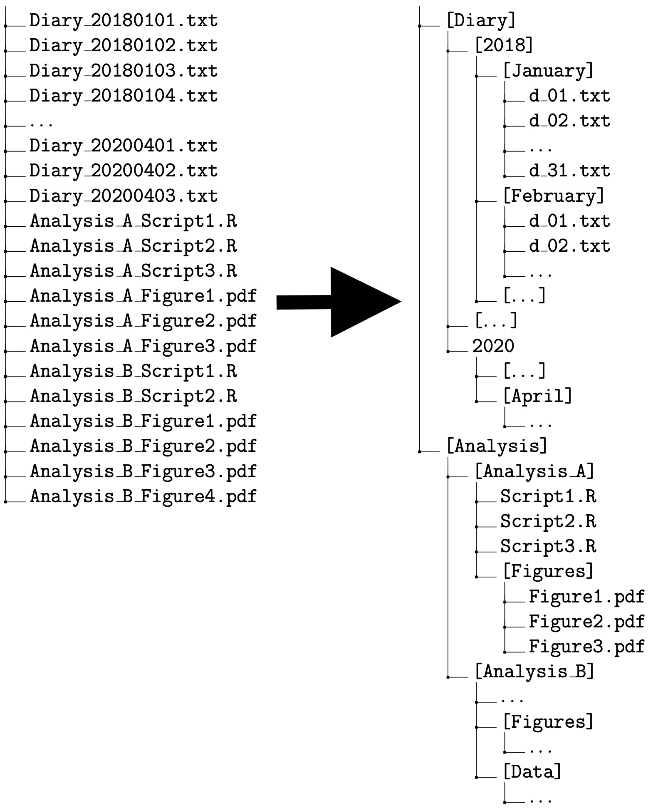

ファイルシステム
Rを使い始める前に、コンピュータについて最低限知っておいてほしい基礎知識について説明する。
ファイル名
まず、コンピュータ上のファイル名について説明する。
ファイル名拡張子
コンピュータの中には、様々な種類のファイルが含まれている。例えば、多くの人は Microsoft Word や Microsoft Excel のファイルを作ったことがあるだろう。Word や Excel で作ったファイルは、基本的にはそれぞれ専用のソフトウェア（アプリ）で開く必要がある。Word で作ったファイルをExcel で開くことや、Excel で作ったファイルを Wordで開くことなどはできない。
ユーザが特に意識しなくても、Word で作ったファイルを [ダブル] クリックすれば Word が起動してそのファイルを開くし、Excel で作ったファイルを [ダブル] クリックすれば Excel が起動して開きたいファイルが開かれる。仮に、Word のファイルとExcelファイルのファイル名が同じ kadai01 だとしても、パソコンは正しいアプリを選んでくれる。パソコンがファイルを区別し、正しいアプリを起動してくれるのはなぜだろうか。
実は、各アプリで作ったファイル名は、自分で名前を付けた部分（上の例では kadai01）の後に続きがある。 Word で作ったファイルには自動的に “.docx” が付けられ、Excel の場合には “.xlsx” が同様に付けられている。 したがって、自分では両方のファイルにまったく同じ kadai01 という名前を付けたつもりでも、実際には、kadai01.docx と kadai01.xlsx という別のファイル名が付いている。 この仕組みにより、パソコンは正しいアプリを選択することができる。ファイル名の末尾に .docx があるファイルがクリックされれば Word を、.xlsx があるファイルが選択されれば Excel を開くのである。
ファイル名の末尾にあってファイルの種類を区別する部分のことをファイル名拡張子 (filename extension) と呼ぶ。上の例からわかるとおり、ファイル名拡張子はファイルの種類を区別する重要情報である。プログラミングをしないパソコンユーザにとっては、ファイルの種類の違いを気にせずにパソコンを使えたほうが便利なので、パソコン購入時の初期設定ではファイル名拡張子が非表示になっている場合がある。しかし、プログラミングをする場合（つまり、この本を読んでいるあなた）は、ファイル名拡張子が見えないと困る。
例えば、Rは様々な形式で保存されたデータファイルを扱うことができるが、種類に応じてデータを読み込む方法（読み込みに使う関数）が異なる。ファイル名拡張子でファイルの種類を区別し、どの方法を使うかを決めるので、拡張子が表示されていないと不便である（MacのFinderやWindows のエクスプローラーで「ファイルの種類」を確認できるので、絶対無理というわけではないが、面倒くさい）。よく使うデータファイルのファイル名拡張子として、次のものがある。
- .csv
- .tsv
- .txt
- .dat
- .dta
- .RData
- .Rds
後の章で説明するが、この他にも種類がある。ファイルの種類がわからないと、様々な方法を試行錯誤することになってしまい、効率が悪い。ファイル名拡張子があればファイルの種類がわかるので、正しい方法を選んで作業を進めることができる。
よって、Rユーザ（あるいはその他のプログラミングをする者）にとって、ファイル名拡張子の表示は必須である。自分のパソコンでファイル名拡張子が表示されていないなら、ファイル名拡張子を表示する設定に変えよう。macOS では、Finder の 環境設定 (Preferences) で、詳細設定 (Advanced) タブを開き、「すべてのファイル名拡張子を表示する (Show all filename extensions)」にチェックマークを付ける。 Windows では、エクスプローラー (Explorer) （注意：インターネットエクスプローラーではない。画面下部のタスクバーに表示されている、黄色のフォルダのアイコン）を開き、上部の [表示]タブをクリックする。すると、「ファイル名拡張子」という項目があるので、チェックマークを付ける。チェックマークを付けたら、Word ファイルに .docx （または .doc）、Excelファイルに .xlsx （または .xls）、PDFファイルに .pdf などが付いていることを確認しよう。
ファイル名の付け方
ファイル名は、ファイルの中身がわかるように付けるのが基本である。例えば、日記を書いて保存するなら、diary_20200701.txt, diary_20200702.txt のように名前を付ければ、特定の日付の日記であることがすぐにわかる。
また、他人にファイルを渡す必要があるときは、相手の立場になってファイル名を付けるのが望ましい。例えば、比較政治学 (Comparative Politics) の授業のレポートをWord で書く場合を考えよう。レポートを書いている本人にとっては、cp_report.docx というファイル名で中身がわかるので問題ないだろう。しかし、これをメールに添付して担当教員に提出する場合はどうだろうか。受講生が100人いて、全員がこの名前でレポートを提出してきたら、担当教員の元には同じ名前のファイルが100個届く。これでは、担当教員は困ってしまう。つまり、cp_report.docx というファイル名は、受け取る相手のことを考えていない、思いやりのないファイル名である。代わりに、学籍番号（例：123456789）を使い、cp_report_123456789.docx のようにすると、ファイル名の重複がないので、受け取る相手（私たちのことだが）は喜ぶだろう。自分が1つのファイル名を変えるのは大した手間ではないのに対し、相手が全員分のファイル名を変えるの大変な手間だということを理解しよう。
加えて、ファイル名の付け方には形式的なルールがある。ファイル名は、英数字と特定の記号（_ [「アンダースコア」、「アンスコ」、「アンダーバー」などと読む] と - [ハイフン]）のみで付けるべきだ。 ファイル名に日本語（または韓国語、中国語などのマルチバイト文字）を使うのは愚かなのでやめよう。日本語のファイル名でも問題ない場合が多いのは確かだが、問題がある場合もあるので使用を回避するのが賢い。日本語のファイル名だと、次のような問題が起こりうる。
- 日本語（マルチバイト文字）を扱えないプログラムが停止する。
- さらに悪いと、日本語（マルチバイト文字）を扱えないプログラムが想定外の動作をする。
- 文字コードの違いにより、ファイル名が文字化けする
- 例えば、日本語のファイル名がついたファイルを Windows で圧縮 (zip) して macOS で展開すると、日本語部分が謎の暗号になるので、どのファイルを開いていいのかわからず、超絶面倒くさい。本当にやめてほしい。お願いだからやめてください。
日本語のなかでも特に凶悪なのが「全角スペース」である。そもそも、スペースは存在に気付きにくい。万が一末尾にスペースがあると、スペースがない場合との区別が難しい。日本語（マルチバイト文字）を扱えないプログラムでは、半角スペースなら問題ないが、全角でスペースだと問題が起きることがある。しかし、目視で半角スペースと全角スペースの区別をするのは非常に困難である。よって、スペースは使うべきではないし、全角スペースは絶対に使ってはいけない。
また、ファイル名の最初の1文字はアルファベットにすることが望ましい。ファイルを並べ替えるときに、数字だとややわかりにくいところがある。例えば、1.txt, 12.txt, 110.txt という3つのファイルをファイル名で並べ替えると、1.txt, 110.txt, 12.txt という順番になる。多くの場合、これはユーザが期待する順番ではない。中身がわかるようにという大原則にしたがえば、アルファベットから始まるファイル名が自然に選ばれるだろう。
ファイル名の付け方をまとめると、次のようになる。
- ファイル名は、英数字 (A-Z, a-z, 0-9) と
_,-のみで付ける。- ただし、ハイフンがあると動かないプログラムもあるので、できればハイフンも避ける。
- ファイル名の1文字目はアルファベットにする（数字を1文字目にすることを避ける）。
.（ドット; ピリオド）は使わない（ファイル名拡張子との混同を避けるため）。- ファイル名にスペースを使わない。全角スペースはもちろん、半角スペースも避けるべき。 - 例えば、
my diary.txtというファイル名の代わりに、my_diary.txtまたはmyDiary.txt、MyDiary.txtなどのファイル名を使う。- ちなみに、
my_diary.txtのように単語をアンスコで繋ぐ書き方をスネークケース (snake case) [_が地を這うヘビである]、myDiary.txtのように単語の1文字目を大文字にして前の単語と区別する書き方をキャメルケース (camel case) [大文字部分がラクダのコブである] と呼ぶ。
- ちなみに、
ただし、次のような例外もある。
- 隠しファイル（Windows 以外では通常は非表示のファイル）の1文字目は
.である。- Rユーザが作る隠しファイルとして、
.Rprofileと.Renvironがある。
- Rユーザが作る隠しファイルとして、
- 自分で作るファイル以外には、
_や#などの記号からファイル名が始まるものもある。
次の節で説明するフォルダ（ディレクトリ）の名前を付ける際も、基本的にはファイル名と同じルールに従うことが望ましい。
ファイルシステムとパス
次に、ファイルシステムについて解説する。私たちが使用しているコンピュータには、数千〜数万（あるいはそれ以上）のファイルが含まれている。これらのファイルは基本的には1つのドライブ (ハードディスクドライブ [Hard Disk Drive; HDD] またはソリッドステートドライブ [Solid State Drive; SSD]） に保存されているが、ドライブの中にあるファイルはグループ化・階層化されて保存されている。
図 1 はファイルシステムの例を示している。矢印の左側には、ドライブ内にあるファイル（の一部）が示されている。通常、これらのファイルは矢印の右側に示されているように、階層化されている。

図 1 の左側にある Diary_YYYYMMDD.txt がYYYY年MM月DD日の日記を保存したテキストファイルだとしよう1。 3年間毎日日記を書くと、それだけでファイル数は1000個以上になる。また、Analysis_blahblah.R はRスクリプトである2。Rスクリプトファイルも複数ある。さらに、上の図には表示されていないが、自分で作ったファイル以外に、OSやソフトウェア（アプリ）を構成するファイルもドライブ内に保存されているだろう。これらのファイルが整理されずに1つの場所にまとめて置いてあるとしよう（上の図の左側の状態）。そうすると、特定のファイルを開いたり、それぞれのファイルがどのような目的で存在するのかを把握したりするのに少なからぬ労を要する。
単に面倒なだけならいい（私たちは面倒なことが大嫌いなので良くないと考える）が、ファイルの置き場が1つだけだと解決できない問題がある。それは、ファイル名の重複が許されないということだ。世の中には、特定の目的のために使われる「お決まりのファイル名」というものがある。例えば、GitHubにレポジトリを追加するときは、そのレポジトリについて説明する README.md というファイルを作ることになっている。しかし、名前が同じだとファイルが区別できないので、同じ場所にまったく同じ名前のファイルを2つ置くことはできない。したがって、ドライブ内にファイル置き場が1つしかないとなると、1つのパソコンで作れる README.md は1つだけということになってしまい、困ってしまう。
そこで、多くのOSではファイルをグループ化して管理するという方法が採用されている。このグループのことを「フォルダ (folder)」または「ディレクトリ (directory)」と呼ぶ3。
上の図の右側は、ファイルをフォルダに分けた様子を表している。 日記のテキストファイルに注目すると、まず、“Diary” という名前のフォルダがあり、Diary フォルダの中に年ごとのフォルダ “2018”, “2019”, “2020” というフォルダがある。それぞれの年のフォルダの中には、“January”, “February”, \(\dots\), “December” という月ごとのフォルダがある。そして、それぞれの月のフォルダの中に、日付がファイル名になったテキストファイルd_01.txt, d_02.txt, \(\dots\) が保存されている。この例からわかるように、フォルダの中にフォルダを作り、そのフォルダの中にフォルダを作り \(\cdots\) ということができるので、フォルダを入れ子にした階層構造を利用してファイルを管理することができる。
ファイルを階層化して管理する場合、フォルダの構造と場所を把握することが必要になる。そのために使われるのがパス (path) である。パスは、コンピュータ内の住所のようなものだと考えればよい。例えば、“Diary” フォルダ内の “2018” フォルダ内の “January” フォルダ内の “d_01.txt” というファイルのパスは、Diary/2018/January/d_01.txt である。この例からわかるように、パスにはフォルダ名やファイル名がそのまま使われる。そして、フォルダの「中」であることは、/ （スラッシュ）記号によって表される。例えば、Diary/ の部分が、Diary フォルダの中であることを示す。ただし、Windows では / の代わりに \（バックスラッシュ）または ￥（円記号; 日本語環境の場合）が使われる4。 Diary/2018/January/d_01.txt と Diary/2018/February/d_01.txt は、ファイル名だけを見れば同じ d_01.txt だが、パスが異なるので異なるファイルとして認識され、1つのドライブ内に共存することができる。
しかし、上に書いたパスは、“Diary” フォルダがどこにあるかを指定していないので完全ではない。パソコンがファイルの場所を正しく把握するには、“Diary” フォルダの置き場所がどこかという情報も必要である。
パソコン内でパスの起点になる場所は、OSによって異なる。Linux やmacOSでは、パスの起点となる最上位フォルダは / であり、多くのWindows機では C:\ （Cドライブと呼ばれる）である5。また、多くのOSでは、ドライブ内に「ホーム (HOME)」と呼ばれる特別なフォルダがあらかじめ用意されており、通常はホームフォルダの中に自分で作ったファイルを保存する。ただし、ホームフォルダの名前は “HOME” ではないので注意が必要である。例えば、macOSではユーザ名がホームフォルダの名前である。例えば、ユーザ名が yukiなら /Users/yuki/ が、ユーザ名が jaehyunsong なら /Users/jaehyunsong/ がホームフォルダのパスである。パスの先頭に / がついており、最上位フォルダの中の “Users” フォルダの中にユーザ名でホームフォルダが作られれている。
ホームフォルダの中に Diary フォルダがあるとすると、2018年1月1日の日記までのパスは、 /Users/jaehyunsong/Diary/2018/January/d_01.txt である。このように、ドライブ内の起点から書いた完全なパスを 絶対パス (absolute path) または フルパス (full path) と呼ぶ。絶対パスを使えば、コンピュータ内の特定のファイルを一意に示すことができる。 絶対パスにホームディレクトリが含まれている場合には、ホームディレクトリまでのパスを省略して ${HOME}/ または ~/ と書くことができる。よって、上の絶対パスは、~/Diary/2018/January/d_01.txt と書くことができる。この書き方を使えば、パスを書き換えることなく共同研究者とファイルを共有することが可能になる（もちろん、ホームフォルダ以下の構造を揃える必要がある）。
自分が作業・操作の対象としているフォルダは、作業フォルダ (working directory; current directory) と呼ばれる6。絶対パスの代わりに、作業フォルダから見た相対パス (relative path)を使うこともできる。例えば、現在の作業フォルダが ~/Diary/2018/ だとすると、2018年1月1日の日記への相対パスは、Januaray/d_01.txt と書ける。 作業フォルダを指定していることを明示したい場合（プログラムを実行する場合にはこれが必要なことがある）には、 ./Januaray/d_01.txt と書く。つまり、./ が作業フォルダを示す。 また、作業フォルダよりも階層が1つ上のフォルダ（親 [parent] フォルダと呼ぶ）には、../ でアクセスでききる。例えば、、現在の作業フォルダが ~/Diary/2018/ だとすると、../ は ~/Diary/ なので、 2020年1月1日の日記への相対パスは ../2020/Januaray/d_01.txt と書くことができる。
相対パスの利点は、
- 絶対パスより短い
- 同じ構造を再利用できる
ということである。1は自明だろう。2は、例えば日記の一覧を作るためのプログラムを書き、それを「年」を表すフォルダに保存すれば、1つひとつの日記に毎年同じ相対パスでアクセスできる（ただし、2月29日は除く）ので、毎年同じプログラムを利用できて便利である。絶対パスを使うと、「年」の部分を毎年書き換えなければいけない。
絶対パスと相対パスは、目的に応じて使い分けることが必要である。